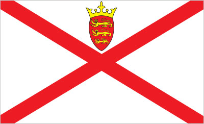
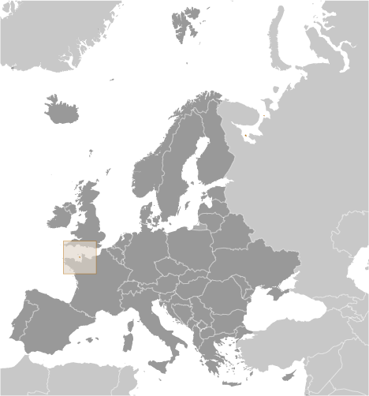

Europe :: JERSEY
Introduction :: JERSEY
-
Jersey and the other Channel Islands represent the last remnants of the medieval Dukedom of Normandy that held sway in both France and England. These islands were the only British soil occupied by German troops in World War II. The Bailiwick of Jersey is a British Crown dependency but is not part of the UK or of the EU. However, the UK Government is constitutionally responsible for its defense and international representation.
Geography :: JERSEY
-
Western Europe, island in the English Channel, northwest of France49 15 N, 2 10 WEuropetotal: 116 sq kmland: 116 sq kmwater: 0 sq kmcountry comparison to the world: 225about two-thirds the size of Washington, DC0 km70 kmterritorial sea: 12 nmexclusive fishing zone: 12 nmtemperate; mild winters and cool summersgently rolling plain with low, rugged hills along north coastmean elevation: NAelevation extremes: lowest point: English Channel 0 mhighest point: Les Platons 136 marable landagricultural land: 66%arable land 66%; permanent crops 0%; permanent pasture 0%forest: 0%other: 34% (2011 est.)NAfairly even distribution; no notable trendsvery large tidal variation can be hazardous to navigationhabitat and species depletion due to human encroachment; water pollution; improper solid waste disposallargest and southernmost of Channel Islands; about 30% of population concentrated in Saint Helier
People and Society :: JERSEY
-
98,840 (July 2017 est.)country comparison to the world: 196noun: Channel Islander(s)adjective: Channel IslanderJersey 46.4%, British 32.7%, Portuguese/Madeiran 8.2%, Polish 3.3%, Irish, French, and other white 7.1%, other 2.4% (2011 est.)English 94.5% (official), Portuguese 4.6%, other 0.9% (2001 census)Protestant (Anglican, Baptist, Congregational New Church, Methodist, Presbyterian), Roman Catholic0-14 years: 16.23% (male 8,300/female 7,740)15-24 years: 13.91% (male 7,094/female 6,658)25-54 years: 40.99% (male 20,318/female 20,200)55-64 years: 12.53% (male 6,042/female 6,339)65 years and over: 16.34% (male 6,879/female 9,270) (2017 est.)total dependency ratio: 47.1youth dependency ratio: 21.6elderly dependency ratio: 25.4potential support ratio: 3.9note: data represent the Guernsey and Jersey (2015 est.)total: 38 yearsmale: 36 yearsfemale: 40.7 years (2017 est.)country comparison to the world: 590.78% (2017 est.)country comparison to the world: 13512.4 births/1,000 population (2017 est.)country comparison to the world: 1607.8 deaths/1,000 population (2017 est.)country comparison to the world: 983.2 migrant(s)/1,000 population (2017 est.)country comparison to the world: 34fairly even distribution; no notable trendsurban population: 31.7% of total population (2017)rate of urbanization: 0.86% annual rate of change (2015-20 est.)note: data are for Guernsey and Jerseyat birth: 1.06 male(s)/female0-14 years: 1.07 male(s)/female15-24 years: 1.06 male(s)/female25-54 years: 1 male(s)/female55-64 years: 0.96 male(s)/female65 years and over: 0.74 male(s)/femaletotal population: 0.97 male(s)/female (2016 est.)total: 3.8 deaths/1,000 live birthsmale: 4 deaths/1,000 live birthsfemale: 3.5 deaths/1,000 live births (2017 est.)country comparison to the world: 195total population: 81.9 yearsmale: 79.5 yearsfemale: 84.6 years (2017 est.)country comparison to the world: 201.66 children born/woman (2017 est.)country comparison to the world: 176NANANA
Government :: JERSEY
-
conventional long form: Bailiwick of Jerseyconventional short form: Jerseyetymology: the name is of Old Norse origin, but the meaning of the root "Jer(s)" is uncertain; the "-ey" ending means "island"British crown dependencyparliamentary democracy (Assembly of the States of Jersey); a Crown dependency of the UKname: Saint Heliergeographic coordinates: 49 11 N, 2 06 Wtime difference: UTC 0 (5 hours ahead of Washington, DC, during Standard Time)daylight saving time: +1hr, begins last Sunday in March; ends last Sunday in Octobernone (British crown dependency); there are no first-order administrative divisions as defined by the US Government, but there are 12 parishes; Grouville, Saint Brelade, Saint Clement, Saint Helier, Saint John, Saint Lawrence, Saint Martin, Saint Mary, Saint Ouen, Saint Peter, Saint Saviour, and Trinitynone (British crown dependency)Liberation Day, 9 May (1945)history: unwritten; partly statutes, partly common law and practiceamendments: proposed by a government minister to the Assembly of the States of Jersey, by an Assembly member, or by an elected parish head; passage requires several Assembly readings, a majority vote by the Assembly, review by the UK Ministry of Justice, and approval by the British monarch (Royal Assent) (2016)the laws of the UK, where applicable, apply; local statutessee United Kingdom16 years of age; universalchief of state: Queen ELIZABETH II (since 6 February 1952); represented by Lieutenant Governor Sir Stephen DALTON (since 13 March 2017) 2017head of government: Chief Minister Ian GORST (since 18 November 2011); Bailiff William BAILHACHE (since 29 January 2015)cabinet: Council of Ministers appointed individually by the stateselections/appointments: the monarchy is hereditary; Council of Ministers, including the chief minister, indirectly elected by the Assembly of States; lieutenant governor and bailiff appointed by the monarchdescription: unicameral Assembly of the States of Jersey (49 elected members; 8 senators to serve 6-year terms, and 29 deputies and 12 connetables, or heads of parishes, to serve 3-year terms; 5 non-voting members appointed by the monarch include the bailiff, lieutenant governor, dean of Jersey, attorney general, and the solicitor general)elections: last held on 15 October 2014 (next to be held in 2017)election results: percent of vote - NA; seats - independents 49highest court(s): Jersey Court of Appeal (consists of the bailiff, deputy bailiff, and 12 judges); Royal Court (consists of the bailiff, deputy bailiff, 6 commissioners and lay people referred to as jurats, and is organized into Heritage, Family, Probate, and Samedi Divisions); appeals beyond the Court of Appeal are heard by the Judicial Committe of the Priviy Council in Londonjudge selection and term of office: Jersey Court of Appeal bailiffs and judges appointed by the Crown upon the advice of the Secretary of State for Justice; bailiffs and judges appointed for extent of good behavior; Royal Court bailiffs appointed by the Crown upon the advice of the Secretary of State for Justice; commissioners appointed by the bailiff; jurats appointed by the Electoral College; bailiffs and commissioners appointed for extent of good behavior; jurats appointed until retirement at age 72subordinate courts: Magistrate's Court; Youth Court; Petty Debts Court; Parish Hall Enquires (a process of preliminary investigation into youth and minor adult offenses to determine need for presentation before a court)one registered party: Reform Jersey [Sam MEZEC]note: most senators and deputies sit as independentsInstitute of Directors, Jersey branch (provides business support)Jersey Hospitality Association or JHa [FIONA KERLEY] (trade association)Jersey Rights Association [David ROTHERHAM] (human rights)La Societe Jersiaise (education and conservation group)Progress Jersey [Daren O'TOOLE, Gino RISOLI] (human rights)Royal Jersey Agriculture and Horticultural Society or RJA&HS (development and management of the Jersey breed of cattle)Save Jersey's Heritage (protects heritage through building preservation)none (British Crown dependency)none (British Crown dependency)white with a diagonal red cross extending to the corners of the flag; in the upper quadrant, surmounted by a yellow crown, a red shield with three lions in yellow; according to tradition, the ships of Jersey - in an attempt to differentiate themselves from English ships flying the horizontal cross of St. George - rotated the cross to the "X" (saltire) configuration; because this arrangement still resembled the Irish cross of St. Patrick, the yellow Plantagenet crown and Jersey coat of arms were addedJersey cow; national colors: red, whitename: "Isle de Siez Nous" (Island Home)lyrics/music: Gerard LE FEUVREnote: adopted 2008; serves as a local anthem; as a British Crown dependency, "God Save the Queen" is official (see United Kingdom)
Economy :: JERSEY
-
Jersey's economy is based on international financial services, agriculture, and tourism. In 2010, the financial services sector accounted for about 50% of the island's output. Potatoes, cauliflower, tomatoes, and especially flowers are important export crops, shipped mostly to the UK. The Jersey breed of dairy cattle is known worldwide and represents an important export income earner. Tourism accounts for one-quarter of GDP. Living standards come close to those of the UK. In recent years, the government has encouraged light industry to locate in Jersey with the result that an electronics industry has developed, displacing more traditional industries. All raw material and energy requirements are imported as well as a large share of Jersey's food needs. Light taxes and death duties make the island a popular tax haven. In October 2014, Jersey signed an OECD agreement to automatically exchange some financial account information to limit tax avoidance and evasion.$5.08 billion (2015 est.)$4.98 billion (2014)note: data are in 2015 US dollarscountry comparison to the world: 172$4.796 billion (FY12/13 est.)2% (2015 est.)country comparison to the world: 134$49,500 (2015 est.)country comparison to the world: 27agriculture: 2%industry: 2%services: 96% (2010)potatoes, cauliflower, tomatoes; beef, dairy productstourism, banking and finance, dairy, electronicsNA%53,380 (June 2012)country comparison to the world: 1904% (2015 est.)1.7% (2012 est.)country comparison to the world: 46NA%lowest 10%: NA%highest 10%: NA%revenues: $829 millionexpenditures: $851 million (2005)17.3% of GDP (2005)country comparison to the world: 171-0.5% of GDP (2005)country comparison to the world: 561 April - 31 March3.7% (2006)country comparison to the world: 158$NA$NAlight industrial and electrical goods, dairy cattle, foodstuffs, textiles, flowers$NAmachinery and transport equipment, manufactured goods, foodstuffs, mineral fuels, chemicals$NAJersey pounds (JEP) per US dollar0.738 (2016)0.738 (2015)0.6542 (2012)0.6391 (2011 est.)
Energy :: JERSEY
-
electrification - total population: 100% (2016)630.1 million kWh (2004 est.)country comparison to the world: 166
Communications :: JERSEY
-
total subscriptions: 55,938subscriptions per 100 inhabitants: 58 (July 2016 est.)country comparison to the world: 148total: 122,668subscriptions per 100 inhabitants: 119 (July 2016 est.)country comparison to the world: 194general assessment: modern system with broadband accessdomestic: fixed-line and mobile-cellular services widely availableinternational: country code - 44; submarine cable connectivity to Guernsey, the UK, and France (2015)multiple UK terrestrial TV broadcasts are received via a transmitter in Jersey; satellite packages available; BBC Radio Jersey and 1 other radio station operating (2009).jetotal: 58,000percent of population: 59.6% (July 2016 est.)country comparison to the world: 197
Transportation :: JERSEY
-
number of registered air carriers: 2 (registered in UK)inventory of registered aircraft operated by air carriers: 11 (registered in UK) (2015)1 (2013)country comparison to the world: 223total: 11,524 to 2,437 m: 1 (2017)total: 576 km (2010)country comparison to the world: 193registered in other countries: 14 (Gibraltar 1, India 2, Marshall Islands 11) (2010)country comparison to the world: 102major seaport(s): Gorey, Saint Aubin, Saint Helier
Military and Security :: JERSEY
-
defense is the responsibility of the UK
Transnational Issues :: JERSEY
-
none